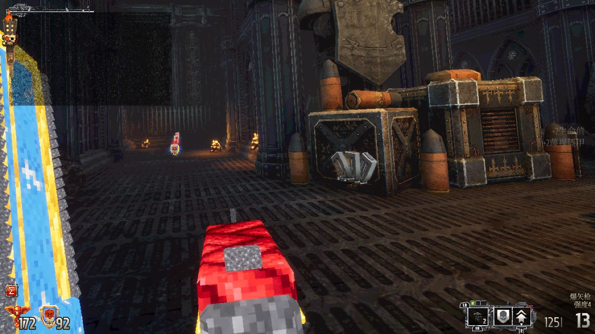

手随枪动
用右手控制枪口方向，瞄准、开火，再通过握持键切换武器。
 ROLAND施浩然 · PORTFOLIO
ROLAND施浩然 · PORTFOLIOBOLTGUN VR / v23.0.0
把 Boltgun 的枪械、链锯剑和菜单接到双手控制器。

用右手控制枪口方向，瞄准、开火，再通过握持键切换武器。
左手挥动链锯剑完成近战，右手继续控制枪械。
移动、转向、跳跃、交互、手雷和菜单选择都集中到手柄。
我为 Boltgun 制作双手控制器操作，接入枪械、链锯剑、菜单和手雷，调整低多边形武器的握持位置，并修正爆燃机枪和重力枪的枪口、方向与命中特效。
本次发布提供模组、对应源码、安装说明和版本记录。

准备 Steam 版 Boltgun、Windows 电脑、Python 3.10 或更新版本、UEVR nightly 01143，以及通过 OpenXR 连接的 PCVR 头显。
以下按 Quest 手柄按键展示。
| 操作 | 游戏动作 |
|---|---|
| 右扳机 | 开火 |
| 右握持按下再松开 | 切换武器 |
| 右握持＋右扳机 | 投掷手雷 |
| 左握持 | 切换手雷 |
| 左摇杆 / 右摇杆 | 移动 / 转向 |
| 按住左摇杆 | 慢走 |
| A / B | 跳跃 / 交互 |
| X / Y | 暂停 / 快速保存 |
| 左手挥动链锯剑 | 近战攻击 |
| 右手指向菜单＋右扳机 | 选择菜单 |